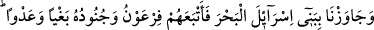
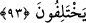
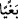
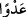

FİR’AVN’UN BOĞULMASI
90. İsrailoğulları’nı denizden geçirdik. Fir’avn ve askerleri de zulmetmek ve
saldırmak için onların peşine düştü. Boğulacağı anda Fir’avn: “Gerçekten
İsrailoğulları’nın inandığından başka tanrı olmadığına inandım. Ben de
müslümanlardanım.” dedi.
91. Şimdi mi? Oysa daha önce isyan etmiş ve bozgunculardan olmuştun.
92. Senden sonra gelenlere ibret olman için bugün senin bedenini kurtaracağız.
Ama insanlardan çoğu, âyetlerimizden gâfildir.
93. Andolsun ki biz, İsrâiloğulları’nı iyi bir yere yerleştirdik ve onlara güzel
rızıklar verdik. Ayrılığa düşmeleri kendilerine ilim geldikten sonra oldu. Şüphesiz
Rabb’in kıyamet günü anlaşmazlığa düştükleri şeyler hakkında aralarında hüküm
verecektir.
“İsrâiloğulları’nı denizden geçirdik.” Yani, karşı kıyıya geçinceye kadar onları
korumak ve denizi kurulaştırmak suretiyle denizden geçmelerini sağladık.
Kâşifî der ki: O kavme azab yaklaşınca Musa (a.s.)’a kendi kavminle Mısır’dan
dışarı çık ki Kıptîler’e azab vakti ulaştı diye vahiy geldi. Musa (a.s.) İsrâiloğulları
topluluğu ile Şam’a doğru yola koyuldu. Kızıldeniz kenarına ulaştıklarında deniz
yarıldı. İsrâiloğulları selâmetle o deryadan geçtiler. Nitekim Hak Sübhânehû ve Teâlâ:
“İsrâiloğulları’nı denizden geçirdik.” yâni biz Yakuboğulları’nı Kızıldeniz’den
selametle geçirdik, buyuruyor.
“Fir’avn ve askerleri de zulmetmek ve saldırmak için” sözde aşırı gidip fiilde haddi
aşarak veya zulmetmek ve saldırmak maksadıyla demektir. Nitekim Kaşifî şöyle der: “
” İsrâiloğulları’na zulüm ve eziyet etmek için, “
” ise onlara hesapsız eziyet ve